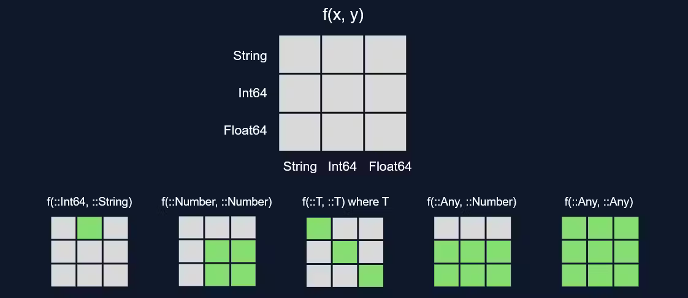
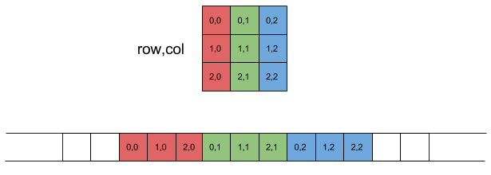

f(x) = 2x
f(x::Int) = x2025-03-04

3-element Vector{Int64}:
1
4
9Indexing in Julia starts from 1!
By default this generates a copy of the array’s data
Several array operations are as expected:

Precompiling BenchmarkTools...
499.0 ms ✓ Statistics
1202.2 ms ✓ JSON
1100.7 ms ✓ BenchmarkTools
3 dependencies successfully precompiled in 2 seconds. 13 already precompiled.@testset "Test set" begin
@test 1 == 1
@test 1 != 2
@testset "Nested test set" begin
@test 2 + 2 == 4
@test 3 * 3 == 9
end
endTest Summary: | Pass Total Time
Test set | 4 4 0.1sTest.DefaultTestSet("Test set", Any[Test.DefaultTestSet("Nested test set", Any[], 2, false, false, true, 1.741810570586768e9, 1.741810570698406e9, false, "/home/enatale/Repositories/PMLJ25/01_julia_intro/julia_intro_part2.qmd")], 2, false, false, true, 1.74181057056868e9, 1.741810570698435e9, false, "/home/enatale/Repositories/PMLJ25/01_julia_intro/julia_intro_part2.qmd")